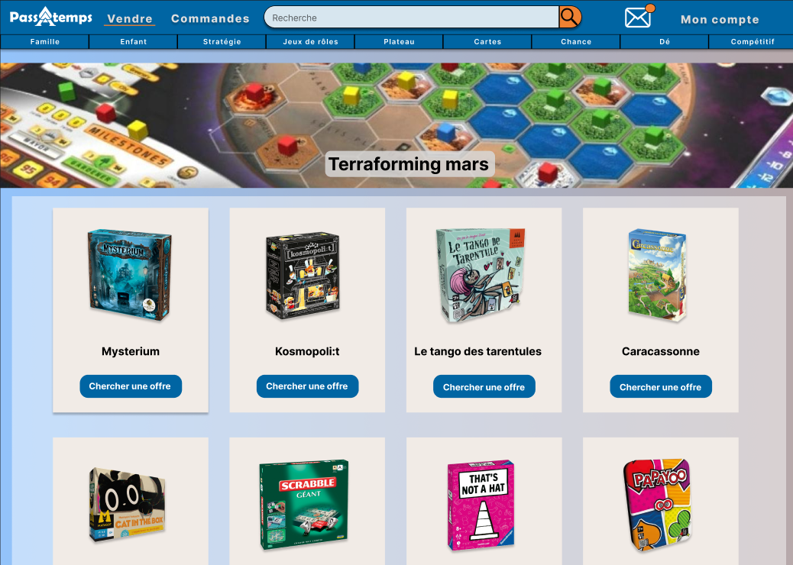

Hello! My name's Raphaël Delcros! I'm a big fan of video-games and TTRPGs (and between us, obsessed with dragons). I've started studying Computer Science since 2024 and was fascinated by it even before then. This website will contain a few projects I did at uni and later on will have more personnal projects. You can consider this website as one!
Passatemps is a three year long project about a second-hand board game reselling website, kind of like Vinted or France's Leboncoin. As it is a long project, it was done in a group. I am considered the P.O. of the project. We've had to do the whole concept from scratch, this includes making a graphic chart, mock-ups and wireframes, as well as a 120 pages long document describing in minute details the project.
